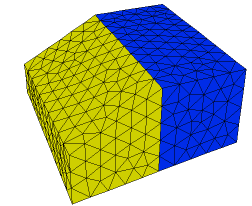

|
tabular_surfaces |

  
|
|
tabular_surfaces |
|
{ TABULAR_SURFACES.PDE
This problem demonstrates the use of tabular input and regional definition
for 3D extrusion surfaces.
The bottom surface of a brick is read from a table.
Note: Tables by default use bilinear interpolation. Mesh cell boundaries do NOT
automatically follow table boundaries, and sharp slope breaks in table data
can result in ragged surfaces. You should always make surface tables dense
enough to avoid sharp breaks, or put domain boundaries or features along
breaks in the table slope. You should also specify mesh density controls
sufficiently dense to resolve table features.
The top surface is defined by different functions in two regions.
Note: the regional surface definitions must coincide at the region boundaries
where they meet. Surfaces must be continuous and contain no jumps.
}
title 'tabular surface definition'
coordinates cartesian3
variables Tp
definitions long = 1 wide = 1 K = 1 Q = 10*exp(-x^2-y^2-z^2)
{ read the table file for surface 1 definition: } z1 = table('surf.tbl') { use regional parameters for surface 2 definition: } z2
initial values Tp = 0.
equations Tp: div(k*grad(Tp)) + Q = 0
|
 |
extrusion z = z1,z2 { define two surfaces from previously declared parameters }
boundaries
surface 1 value(Tp)=0
surface 2 value(Tp)=0
Region 1
z2 = 1 { default surface 2 over total domain }
start(-wide,-wide)
value(Tp) = 0
line to (wide,-wide)
to (wide,wide)
to (-wide,wide)
to close
Region 2
z2 = 1 + x/2 { override surface 2 definition in region 2 }
start(-wide,-wide)
line to (0,-wide)
to (0,wide)
to (-wide,wide)
to close
monitors
grid(x,z) on y=0
plots
grid(x,z) on y=0
contour(Tp) on y=0 as "ZX Temp"
contour(Tp) on x=0 as "YZ Temp"
end